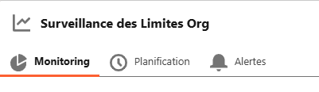
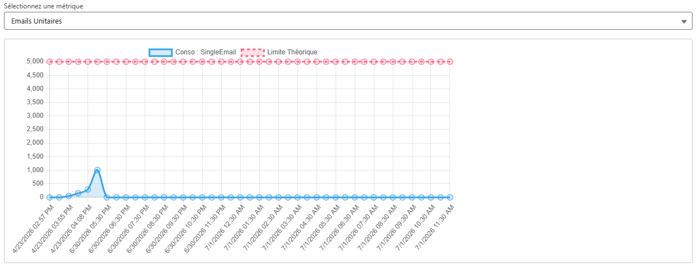
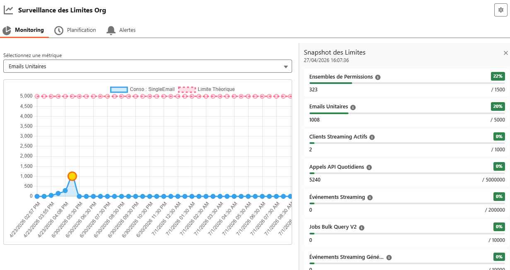
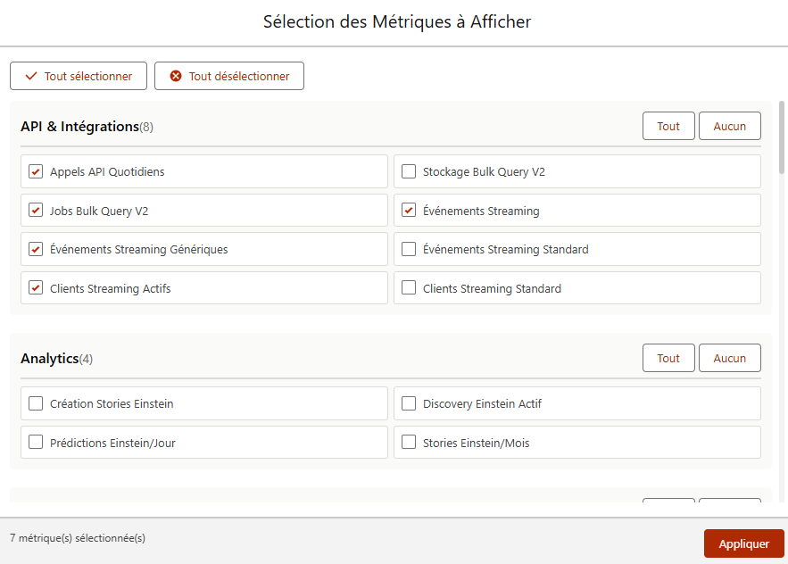
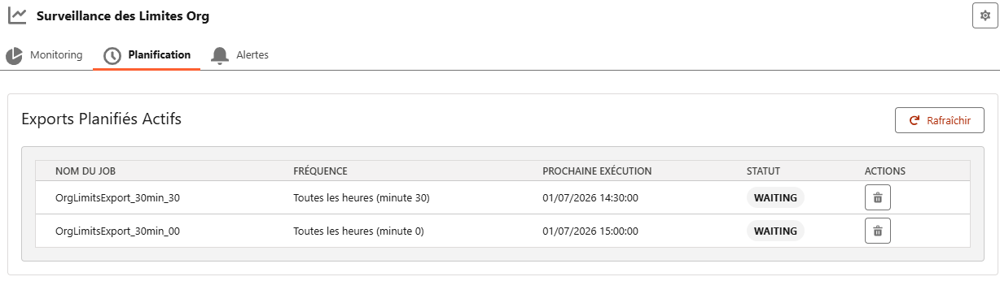
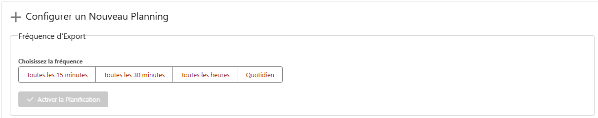
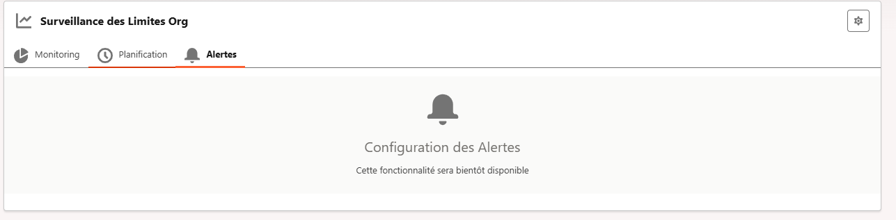

Aperçu
À quoi sert l'application
Le composant Surveillance des Limites Org centralise le suivi des limites de la plateforme Salesforce (stockage, appels API, emails, événements, etc.). Il permet de suivre l'évolution de la consommation dans le temps, de comparer chaque valeur à son plafond théorique, et de mettre en place des exports planifiés pour alimenter l'historique.
L'interface est organisée en trois onglets :
- Monitoring — le graphique d'évolution et le détail d'un instantané.
- Planification — la gestion des exports automatiques qui construisent l'historique.
- Alertes — fonctionnalité à venir.

Avant de commencer
Prérequis & accès
- Le composant doit être ajouté à une page Lightning (page d'accueil, page d'application ou onglet dédié).
- L'historique affiché provient des fichiers CSV d'export stockés dans la bibliothèque de documents nommée
Reporting Limites. Sans export disponible, le graphique reste vide et un message vous invite à vérifier cette bibliothèque. - Les préférences d'affichage (métriques masquées) sont propres à chaque utilisateur et conservées d'une session à l'autre.
Si l'écran est vide au premier lancement, commencez par l'onglet Planification pour créer un premier export : c'est lui qui alimente les données du graphique.
Onglet 1
Monitoring — lire la consommation
Cet onglet affiche l'évolution d'une métrique sur la durée. Deux courbes sont superposées :
- Consommation réelle — courbe bleue, avec aire remplie : la valeur effectivement consommée à chaque relevé.
- Limite théorique — courbe rouge en pointillés : le plafond autorisé par l'organisation.
-
Choisir la métrique à afficher
Utilisez la liste déroulante « Sélectionnez une métrique » en haut du graphique. Les métriques sont triées par nom et n'affichent que celles que vous n'avez pas masquées (voir la personnalisation plus bas).
-
Lire le graphique
L'axe horizontal correspond à l'horodatage de chaque relevé (date + heure). Comparez visuellement la courbe bleue à la courbe rouge : plus l'écart se réduit, plus vous approchez du plafond.
-
Inspecter un point précis
Cliquez sur n'importe quel point de la courbe pour ouvrir le détail complet du relevé (voir la section suivante). Le point sélectionné est mis en surbrillance (contour orange, centre doré).

Onglet 1 · Détail
Consulter un instantané (snapshot)
Au clic sur un point du graphique, un panneau s'ouvre à droite : le Snapshot des Limites. Il liste toutes vos métriques visibles telles qu'elles étaient à l'instant sélectionné, avec la date exacte du relevé en en-tête.
Pour chaque métrique : son nom lisible, une infobulle (i) décrivant la métrique, le pourcentage d'utilisation, une barre de progression, et les valeurs actuelle / maximum.
Code couleur des statuts
Le pourcentage et la barre changent de couleur selon le niveau de consommation :
Fermez le panneau avec la croix en haut à droite ; le point du graphique reprend alors son apparence normale. Le contenu du snapshot se met automatiquement à jour si vous modifiez la sélection des métriques.

Onglet 1 · Réglages
Personnaliser les métriques affichées
La roue crantée ⚙, en haut à droite de la carte, ouvre la fenêtre de sélection des métriques. Vous y choisissez celles à afficher dans le sélecteur et dans les snapshots.
-
Ouvrir les paramètres
Cliquez sur l'icône ⚙ (« Paramètres ») à côté du titre de la carte.
-
Cocher / décocher les métriques
Les métriques sont regroupées par catégorie (Stockage, Communication, API & Intégrations, Automatisation, Événements, Sécurité, Rapports, Analytics, Développement…). Cochez celles à afficher, décochez celles à masquer.
-
Utiliser les raccourcis
Tout sélectionner / Tout désélectionner agissent sur l'ensemble. Les boutons Tout / Aucun de chaque en-tête de catégorie agissent uniquement sur celle-ci. Le compteur en bas indique le nombre de métriques sélectionnées.
-
Appliquer
Le bouton Appliquer ferme la fenêtre et enregistre vos préférences (un message de confirmation s'affiche). Si la métrique actuellement affichée dans le graphique vient d'être masquée, l'affichage bascule automatiquement sur la première métrique disponible.

Onglet 2
Planification — automatiser les exports
Cet onglet gère les exports planifiés qui alimentent l'historique du Monitoring. Il se compose de deux zones : la liste des plannings actifs, et le formulaire de création.
Exports planifiés actifs
Le tableau récapitule les jobs en place : Nom du Job, Fréquence, Prochaine Exécution, Statut et Actions. Le bouton Rafraîchir recharge la liste à tout moment. Les statuts sont signalés par une pastille de couleur :
| Statut du job | Signification |
|---|---|
WAITING / ACQUIRED | Planifié, en attente de sa prochaine exécution (pastille verte). |
EXECUTING | Exécution en cours (pastille orange). |
PAUSED | En pause (pastille claire). |
Pour retirer un planning, cliquez sur l'icône corbeille de sa ligne : la suppression est immédiate et la liste se rafraîchit. Si aucun planning n'existe, un encart « Aucun export planifié actif » s'affiche.

Configurer un nouveau planning
-
Choisir une fréquence
Sélectionnez l'une des options : Toutes les 15 minutes, Toutes les 30 minutes, Toutes les heures ou Quotidien.
-
Préciser l'heure (mode quotidien)
Si vous choisissez Quotidien, un sélecteur d'heure apparaît (par tranches de 30 minutes, de 00:00 à 23:30). Il est obligatoire pour valider.
-
Vérifier le résumé
Un encart bleu « Résumé de la Planification » décrit en clair ce qui sera exécuté (par ex. « toutes les 15 minutes… » ou « tous les jours à 08:00 »).
-
Activer
Cliquez sur Activer la Planification. Le bouton reste inactif tant qu'aucune fréquence n'est choisie (ou, en quotidien, tant qu'aucune heure n'est sélectionnée). Un message confirme la création et la liste se met à jour.
Un seul planning actif à la fois. Si un planning existe déjà, le formulaire de création est verrouillé et un avertissement s'affiche : vous devez d'abord supprimer le planning existant pour en créer un nouveau. Cela évite les doublons d'exports.

Onglet 3
Alertes
Cet onglet est réservé à la configuration des alertes. La fonctionnalité n'est pas encore disponible : un message « Cette fonctionnalité sera bientôt disponible » s'affiche pour l'instant.

Support
Dépannage & FAQ
Le graphique est vide ou affiche un message d'erreur
Cela signifie qu'aucune donnée n'a été trouvée. Vérifiez que la bibliothèque de documents Reporting Limites existe et contient des fichiers CSV d'export. Créez un export depuis l'onglet Planification si nécessaire, puis attendez la première exécution.
Une métrique n'apparaît pas dans la liste déroulante
Elle est probablement masquée. Ouvrez la roue crantée ⚙, cochez la métrique dans sa catégorie, puis cliquez sur Appliquer.
Je ne peux pas créer de nouveau planning
Un planning actif existe déjà : le formulaire est verrouillé pour éviter les doublons. Supprimez le planning existant (icône corbeille dans le tableau), puis recréez-en un.
Le tableau des plannings ne reflète pas mon action
Cliquez sur Rafraîchir. La liste se recharge aussi automatiquement à l'ouverture de l'onglet et après chaque création ou suppression.
Mes préférences d'affichage sont-elles conservées ?
Oui. Les métriques masquées sont enregistrées par utilisateur lorsque vous cliquez sur Appliquer, et restaurées à votre prochaine ouverture.